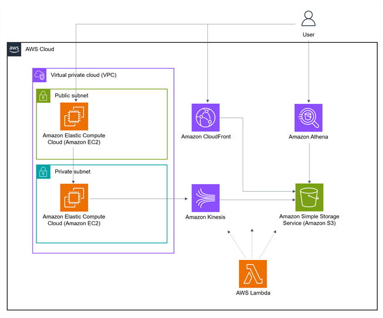

2023년도 전국기능경기대회
1. 요구사항
여러 리소스에서 발생하는 로그를 수집하고 처리하여 클라우드 스토리지에 저장하고, 저장된 로그를 기반으로 쿼리를 수행하여 시스템 운영의 개선을 위한 근거로 사용하고자 합니다. 동시에 정적 콘텐츠를 저장하고 제공하며 콘텐츠 제어 작업을 자동화하고, 보안 사고에 대비하여 보안 사고 대응 프로세스를 자동화하고자 합니다. 세부 요구사항을 참조하여 로그 수집/처리/쿼리 작업, 정적 콘텐츠 제공 서비스 운영, 보안 사고 대응 자동화를 구성해야 합니다.
다이어그램


Software Stack
2. 선수 유의사항
1) 기계 및 공구 등의 사용 시 안전에 유의하시고, 필요 시 안전장비 및 복장 등을 착용하여 사고를 예방하여 주시기 바랍니다.
2) 작업 중 화상, 감전, 찰과상 등 안전사고 예방에 유의하시고, 공구나 작업도구 사용 시 안전보호구 착용 등 안전수칙을 준수하시기 바랍니다.
3) 작업 중 공구의 사용에 주의하고, 안전수칙을 준수하여 사고를 예방하여 주시기 바랍니다.
4) 경기 시작 전 가벼운 스트레칭 등으로 긴장을 풀어주시고, 작업도구의 사용 시 안전에 주의하십시오.
5) 선수의 계정에는 비용의 제한이 존재하며, 이보다 더 높게 요금이 부과될 시 계정 사용이 불가능할 수 있습니다.
6) 문제에 제시된 괄호 박스 <>는 변수를 뜻함으로 선수가 적절히 변경하여 사용해야 합니다.
7) EC2 인스턴스의 TCP 80/443 outbound는 anyopen하여 사용할 수 있도록 합니다.
8) 과제의 Bastion 서버에서 대부분의 채점이 이루어짐으로 인스턴스를 생성하지 않았거나 종료된 상태면 채점이 불가능하니 각별히 주의하도록 합니다.
9) 과제 종료 시 진행 중인 테스트를 모두 종료하여 서버에 부하가 발생하지 않도록 합니다.
10) 별도 언급이 없는 경우, ap-northeast-2 리전에 리소스를 생성하도록 합니다.
11) 1페이지의 다이어그램은 구성을 추상적으로 표현한 그림으로, 세부적인 구성은 아래의 요구사항을 만족시킬 수 있도록 합니다. (ex. 서브넷이 2개 이상 존재할 수 있습니다.)
12) 모든 리소스의 이름, 태그, 변수과 변수는 대소문자를 구분합니다.
13) 문제에서 주어지지 않는 값들은 AWS Well-Architected Framework 6 pillars를 기준으로 적절한 값을 설정해야 합니다.
14) 불필요한 리소스를 생성한 경우, 감점의 요인이 될 수 있습니다. (e.g. VPC 추가 생성)
15) 문제에서 요구하는 태그 정책을 따르지 않을 경우 감점의 요인이 될 수 있습니다.
16) 모든 리소스의 시간은 UTC+9 (KST) 타임존 기준으로 설정합니다.
3. 네트워크 구성
클라우드 인프라에 대해 네트워크 레벨의 격리 및 분리를 할 수 있도록 아래 요구사항을 참고하여 VPC를 구성합니다. 서브넷 이름 뒤의 알파벳은 Availability Zone을 의미합니다.
VPC 정보
- VPC CIDR : 10.1.0.0/16
- VPC Tag : Name=wsi-vpc
- Internet G/W Tag : Name=wsi-igw
App subnet A 정보
- CIDR : 10.1.0.0/24
- Tag : Name=wsi-app-a
- 외부 통신 : NAT G/W를 구성하여 인터넷 접근이 가능하도록 구성
- Route table Tag : Name=wsi-app-a-rt
- NAT G/W Tag : Name=wsi-natgw-a
Public subnet A 정보
- CIDR : 10.1.2.0/24
- Tag : Name=wsi-public-a
- 외부 통신 : Internet G/W 를 구성하여 인터넷을 접근
- Route table Tag : Name=wsi-public-rt
4. Bastion 서버
EC2를 활용해 Bastion 서버를 구성합니다. bastion 서버의 접근을 위해서 TCP 4272(SSH)를 사용합니다. bastion 서버는 외부에서 SSH 프로토콜만을 허용하도록 Security Group을 구성합니다. SSH 프로토콜을 통해 접근할 경우 접근 로그에 대해서 cloudwatch logs에 저장하도록 합니다. 로그에는 사용자명, 접근IP(Client IP)가 포함되어 있어야 합니다. 접근 로그는 1분 이내에 cloudwatch logs에 저장 되도록 합니다.
Bastion 서버에 user01, user02, user03 리눅스 계정을 생성하고 비밀번호는 pAss@@12로 설정합니다. 또한 해당 유저들이 Bastion 서버에 패스워드를 이용하여 SSH로 접근할 수 있어야 합니다.
- Instance type : t3.small
- AMI : Amazon Linux2
- Subnet : Public subnet A
- 설치 패키지 : awscli, jq, curl, parquet-tools
- Tag : Name=wsi-bastion
- Security group name: wsi-bastion-sg (*명시된 Security Group 하나만을 사용합니다.)
- EC2 IAM Role : 모든 리소스에 대해 full access를 가지는 role을 생성하여 붙입니다. role 이름은 wsi-bastion-role로 설정합니다.
- cloudwatch logs group: /wsi/security/bastion-ssh
- cloudwatch logs stream: login
5. 웹 애플리케이션
foo/bar 애플리케이션을 배포합니다. 제공된 binary는 x86기반 EC2의 Amazon Linux2에서 빌드하고 동작을 확인하였습니다. go version은 go1.18.9 linux/amd64 입니다. 애플리케이션 실행 시 바인딩 되는 포트는 TCP/8080입니다. 애플리케이션은 access log를 log/app.log 파일(상대 경로)에 저장합니다. app.log 파일에 대해서 별도의 log rotation 설정은 하지 않습니다. 모든 API는 5초 이내에 응답해야 합니다.
- foo/bar
접근 로그를 생성하기 위한 임시 API입니다. 단순한 스트링을 출력합니다.
foo/bar 애플리케이션은 가용성/확장성을 고려할 필요가 없습니다. EC2 인스턴스를 생성하고 애플리케이션을 배포하여 데몬으로 실행합니다. 갑작스러운 오류에 대비하여 애플리케이션은 재부팅 시에도 재가동될 수 있어야 합니다.
- Instance type: t3.small
- Subnet: App subnet A
- Tag: Name=wsi-app
foo/bar 애플리케이션은 wsi-bastion 서버에서 직접적으로 접근하며 외부 사용자에게 노출되지 않습니다. 최소한의 권한만을 허용할 수 있도록 구성합니다.
6. S3
2개의 S3 버킷을 생성하여 각기 용도에 맞게 버킷을 설정합니다. 하나의 버킷은 정적 콘텐츠를 저장하고 제공합니다. S3에 저장되는 정적 콘텐츠는 사용자에게 직접적으로 노출되어서는 안 되며, CloudFront를 통해서만 접근 가능해야 합니다. 만약 S3 버킷내 기존 콘텐츠를 업데이트 한다면 CloudFront를 통해 접근하는 사용자는 1분 이내에 업데이트된 콘텐츠를 제공 받을 수 있어야 합니다. 정적 콘텐츠를 제공하는 버킷은 임의의 CMK로 서버측 암호화를 수행합니다. 채점시 정적 콘텐츠 저장용 버킷내 object를 모두 삭제 후 채점을 시작합니다. 또한, 정적 콘텐츠 S3 버킷에 접근하는 서버 로그를 로그 저장용 버킷의 s3-accesslog/ 경로에 저장해야 합니다. 경기 종료 전 S3 서버 접근기록(로그)이 2건 이상 s3-accesslog/ 아래에 경로에 존재해야 채점이 가능합니다. 다른 하나의 버킷은 로그 데이터를 저장합니다. 해당 버킷은 모든 로그 데이터를 저장하는 용도로 사용됩니다.
- 버킷이름(정적 콘텐츠): wsi-static-<임의의 4자리 영문>
- 버킷이름(로그 저장): wsi-logs-<임의의 4자리 영문>
7. Cloud Front
CloudFront를 통하여 정적 콘텐츠에 접근이 가능하도록 합니다. S3에 업로드되는 정적 콘텐츠를 캐싱할 수 있도록 구성합니다. 사용자가 CloudFront에 HTTP 접근 시에도 HTTPS로 리디렉션 되어 HTTPS로만 접근할 수 있도록 구성합니다. 제공된 images 파일들은 사용자에게 제공되기 전 128x128 사이즈로 변경되어 사용자에게 제공되도록 구성합니다. 단, 기존 콘텐츠(이미지)가 변경되어서는 안 됩니다.
- Origin : S3 Bucket(정적 콘텐츠)
- Edge : 한국뿐만 아니라 전 세계의 유저가 빠른 속도로 접근할 수 있도록 구성
- Tag : Name=wsi-cdn
- 기타 : 채점 시 오동작 예방으로 IPv6는 비활성화하고, 하나의 CloudFront만 생성
8. Kinesis
foo/bar 애플리케이션에서 발생하는 access log를 Kinesis를 통해 수집/처리한 뒤 로그 수집 버킷(S3)에 저장합니다. 애플리케이션에서 발생하는 access log의 패턴을 분석하여 분석에 용이하도록 다음과 같이 변환 작업을 수행합니다. 변환 작업 후‘6. S3’에서 생성한 로그 저장용 버킷의 accesslog/ 하위에 parquet 포맷으로 저장되도록 구성합니다. /healthcheck 경로에 대한 로그 데이터는 S3에 저장되지 않아야 합니다.
- 애플리케이션 로그 포맷
clientIP - [ Timestamp ] "Method Path Protocol ResponseCode ProcessingTime " UserAgent "
e.g. 8.8.8.8 - [2023-10-13T04:00:00Z] "GET /v1/foo HTTP/1.1 200 40.1us "curl/x.x.x" "
- 데이터 변환 규칙
- parquet 형식으로 변환 후 데이터컬럼 이름은 아래와 같음.
clientip, year, month, day, hour, minute, second, method, path, protocol,
responsecode, processingtime, useragent
- Kinesis Stream 이름: wsi-log-stream
- Kinesis Firehose 이름: wsi-log-firehose
9. Athena
S3 버킷에 저장된 로그 데이터 분석을 위해 Athena를 사용합니다. S3 버킷에 저장된 애플리케이션 로그 데이터를 기반으로 트래픽 패턴을 분석합니다. 대회 당일 발생한 로그 데이터의 1분 간격으로 집계합니다. 이때 path, status code를 조합한 기준으로 카운트 합니다. /v1/foo + 200과 /v1/foo + 201 은 다른 조합임으로 구분되어 집계되어야 합니다. /v1/foo + 200과 /v1/bar + 200도 다른 조합임으로 구분되어 집계되어야 합니다. path와 status code가 완전히 동일한 경우만 같은 조합으로 집계됩니다. 쿼리 이름은 TrafficPatternQuery로 명명합니다. Athena Table의 이름은 accesslog로 지정합니다. 테이블 생성시 효율적인 쿼리를 위하여 일자별 파티셔닝을 구성합니다. 테이블 구성 채점시 Athena query로 describe query 를 사용해 테이블 구성을 채점합니다.
10. 로그 백업
wsi-app 인스턴스가 갑작스럽게 종료되는 것을 대비하여, 1분에 한 번씩 access log가 저장된 파일(app.log 파일)을 로그 저장용 s3 버킷에 백업합니다.
- 저장위치: accesslog-backup/interval/<year>/<month>/<day>/<hour>/<minute>/app.log
인스턴스 종료 또는 재시작 시 access log 파일을 s3에 업로드하고 종료될 수 있도록 스크립트를 구성합니다.
- 저장위치: accesslog-backup/shutdown/<year>/<month>/<day>/<hour>/<minute>/app.log
11. 보안 대응 자동화
- Bastion 보안 구성
Bastion으로의 SSH 접근(로그인)이 5분 이내에 10번 이상 발생하면, 비정상적인 접근으로 판단하여 Bastion을 격리하도록 합니다. (Bastion 서버의 모든 Security Group Ingress / Egress Rule을 Revoke 합니다.)
Bastion에서 5분 이내에 로그인 시도 5회 실패 시, 비정상적인 로그인 시도로 판단하여 120초 동안 리눅스 사용자가 잠기도록 구성합니다.
- Console login 보안 구성
consoleuser IAM 계정을 생성하고, 해당 계정이 5분 이내에 Console 로그인을 5회 이상 실패할 경우 cloudwatch Alarm의 Alert이 발생하도록 구성합니다. cloudwatch Alarm이름은 loginAlarm으로 설정합니다.